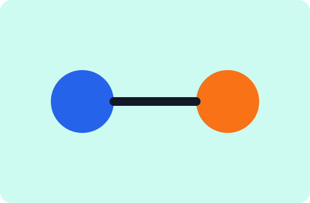

Planning
What a useful website brief should include
A concise guide to goals, audiences, content, and decisions that make a build move cleanly.

Service
A practical roadmap for content, structure, conversion paths, and launch priorities before design begins.

Service
Content-forward page designs with responsive layouts, accessible patterns, and a flexible visual system.

Service
Clean WordPress theme implementation with maintainable templates, local assets, and predictable build tooling.

Service
Connect forms, publishing workflows, analytics-ready events, and practical operational details without clutter.

Service
Post-launch improvements, troubleshooting, updates, and guidance that keep the site useful after launch.

Service
Refine navigation, calls to action, page speed, and content clarity based on business priorities.


Planning
A concise guide to goals, audiences, content, and decisions that make a build move cleanly.

WordPress
How templates, reusable parts, and editor settings can keep future publishing straightforward.

Launch
Content, redirects, forms, accessibility, and performance checks to review before a site goes live.

Support
Early signals that help teams improve content, calls to action, and support workflows.
Contact
Share the business goal, current site situation, service interest, and any timeline considerations. Northstar will use that context to understand the best next conversation.